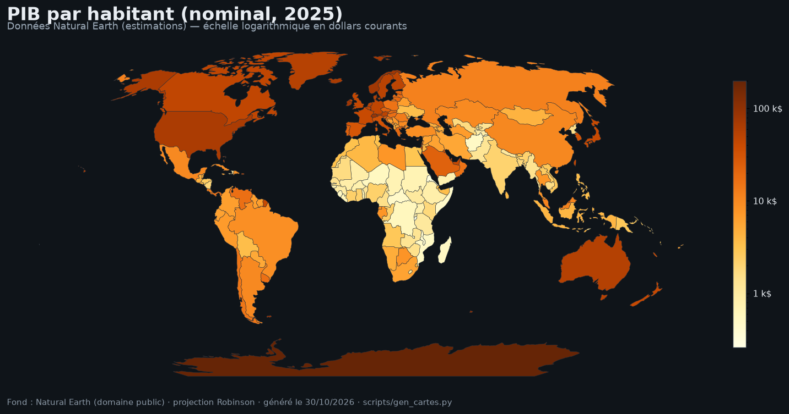

Objectif : relier le conflit à la Belgique et ouvrir sur l’engagement citoyen concret — la paix comme concept, la Belgique comme actrice, l’action comme choix.
Le doc. de travail pose la question dans notre pays : la Belgique est en paix négative — pas de guerre sur son sol — mais cette paix cohabite avec des violences institutionnelles (migrations, maintien de l’ordre, discriminations) et une participation active aux guerres des autres : industrie de l’armement, licences d’exportation, OTAN, coalitions (Afghanistan, Libye, Irak-Syrie), appui militaire à l’Ukraine (doc. de travail). Les conflits externalisés reviennent « ici » par les réfugiés, les débats sécuritaires, les images en continu — et nourrissent ce que le doc. nomme des affects guerriers : anxiété, sidération, colère, impuissance, fascination — terreau de discours autoritaires qui valorisent la force au détriment du dialogue. La culture de paix, dans ce cadre, n’est pas un supplément d’âme : c’est interroger nos responsabilités économiques, militaires et historiques — héritages coloniaux, inégalités, racisme — ici et ailleurs, par les mêmes outils : éducation critique, droit international, solidarité.
Depuis octobre 2023, la Belgique vit une mobilisation rare : manifestations de dizaines de milliers de personnes (plusieurs cortèges dépassant les chiffres des grandes marches climatiques) ; campements étudiants à la VUB, à l’UCLouvain et ailleurs (2024-2025) exigeant la rupture de partenariats académiques avec des universités israéliennes ; contre-mobilisations et accusations croisées ; débats houleux dans les conseils communaux (reconnaissance de la Palestine, produits des colonies) ; et sur les réseaux, l’effacement de la nuance documenté au ch. 8 (doc. de travail ; presse belge 2023-2026). Le doc. de travail en tire une méthode en deux volets : sur le fond — contexte historique minimal, notions et acteurs clarifiés (éviter les amalgames), conséquences humaines visibles, initiatives de paix montrées (contre le fatalisme) ; sur la forme — revenir aux faits et au droit, accueillir les émotions sans les laisser diriger, écoute respectueuse, décentrement, et ligne rouge légale explicite.
Le doc. de travail reconstitue la chaîne matérielle : consommation (produits des colonies dans les rayons — l’étiquette d’origine est le point de contrôle manquant) ; finance (banques investies dans les entreprises de la liste ONU des entités liées aux colonies) ; armes — le cas belge est documenté : en mars 2024, la presse révèle des vols d’armes transitant par l’aéroport de Liège ; en octobre 2024, le tribunal de première instance de Bruxelles enjoint aux autorités flamandes de bloquer un conteneur militaire à Zeebrugge et d’interdire les transits ultérieurs — une décision de justice là où la politique restait muette ; des pièces de moteurs de F-15 auraient été produites sur le territoire (doc. de travail ; presse belge 2024). Côté européen : l’accord d’association UE-Israël (2000) conditionne les relations au « respect des droits de l’homme » (art. 2) ; en 2025, le rapport demandé par le Conseil (haut représentant) conclut à des violations « probables » — la révision de l’accord s’enlise faute de consensus, tandis que l’UE signe en 2022 un partenariat gazier avec Israël (doc. de travail ; Conseil UE 2025). Le doc. nomme le nœud :

La chaîne est reconstituable : enquêtes journalistiques (mars 2024) → actions en justice (blocage du conteneur, octobre 2024) → mobilisation continue et communes pilotes (Gand) → accord fédéral de 12 sanctions (septembre 2025, sous pression civile et judiciaire) → arrêté royal survol (2026) (doc. de travail). Le détail institutionnel importe : l’arrêté royal se limite au survol parce que les compétences douanières d’import-export sont régionales — le fédéral tient le ciel, les régions tiennent les ports : la structure belge est elle-même un verrou (et un levier : agir au bon niveau). Le doc. note aussi le reflux : le cessez-le-feu imposé par le plan Trump (ch. 10) a servi de prétexte au gel partiel des sanctions — un cessez-le-feu fragile n’éteint pas les obligations juridiques ; le suivi (courriers aux élus, permanences, presse) est le métier de la citoyenneté.
Le doc. de travail clôt la mallette par ce que les médias montrent peu : des Israéliens, des Palestiniens et des internationaux qui refusent la violence comme seule issue — ALLMEP (coalition de 180+ organisations pour des projets sociaux et éducatifs) ; EcoPeace Middle East (Palestiniens, Jordaniens, Israéliens autour de l’eau — la ressource comme lien) ; Breaking the Silence (anciens soldats israéliens qui témoignent de l’occupation — 2004) ; Don’t Buy Into Occupation (enquête sur les finances européennes des colonies, campagnes de désinvestissement) ; Tashattot Collective (artistes SWANA en Belgique) ; Francis Alÿs — l’artiste belge marchant la ligne verte de 1949, 58 litres de peinture versant pour la tracer (Jérusalem, 2004) ; Les Guerrières de la Paix (mouvement fondé par Hanna Assouline, 2022) ; et les voix juives pour la paix — EJJP (fédération européenne), UPJB (Union des Progressistes Juifs de Belgique), EAJS / Een Andere Joodse Stem — qui rappellent qu’il n’y a pas une communauté, mais des positions (doc. de travail). La leçon finale du doc. : la tolérance et le dialogue ne sont pas naïfs — ce sont des leviers concrets ; la question n’est pas « peut-on faire quelque chose ? » mais « que choisissons-nous de faire ? »
Espace de travail : cette page est le dossier vivant du chapitre — brouillons, activités, sources et repères s’y accumulent, séparément de l’index. Les attributions entre parenthèses dans le texte renvoient aux entrées ci-dessous.
Documents de travail (Drive) — « 11. Agir.docx » (document de base de ce chapitre) · « 250407_bibliographie_Pal-Isr.docx » (bibliographie générale de l’équipe) · « 250701_dates clés_ISRAPAL.xlsx » · « 250701_Lexique_ISRAPAL.docx » · dossier racine « 2026_Outil péda_Israël-Palestine ».
Concepts de paix — Johan Galtung, Violence, Peace, and Peace Research (1969) — paix négative / positive, violence structurelle · SIPRI — recherche sur la paix et les armements.
Belgique — SPF Affaires étrangères · les « 12 sanctions » belges contre Israël (septembre 2025) · arrêté royal sur le survol et les escales techniques (2026, Moniteur belge) · décision du tribunal de première instance de Bruxelles, octobre 2024 (blocage du conteneur) · rapports du GRIP sur les licences d’armes.
Union européenne — Politique commerciale de la Commission européenne — l’UE, premier partenaire commercial d’Israël · accord d’association UE-Israël (2000), art. 2 — clause droits de l’homme · rapport du haut représentant sur la révision de l’accord (2025) · partenariat gazier UE-Israël (2022).
Obligations internationales — art. 1 commun des Conventions de Genève (« respecter et faire respecter ») · Convention génocide (1948), art. 1 · ordonnance CIJ du 26 janvier 2024 (mesures conservatoires, affaire 192) · avis CIJ 2004 et 2024 (non-reconnaissance, non-assistance) · Traité sur le commerce des armes · Position commune UE 2008/944/PESC (exportations d’armes).
S’inspirer — ALLMEP · EcoPeace Middle East · Breaking the Silence · Don’t Buy Into Occupation (dontbuyintooccupation.org) · Tashattot Collective · Francis Alÿs, The Green Line (2004) · Les Guerrières de la Paix (guerrieresdelapaix.be) · EJJP (ejjp.eu), UPJB (upjb.be) et EAJS / Een Andere Joodse Stem.